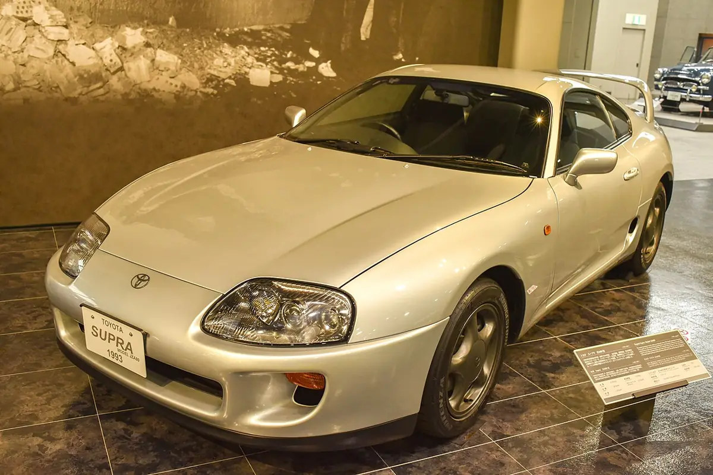

Par Motor › Historia del motor › Toyota
Historia del motorToyota: la historia completa

Este es el Toyota Corolla. El coche más vendido de la historia.
Lo curioso es que la empresa que lo fabrica empezó haciendo… telares.
Y que inventó una forma de fabricar que hoy copian fábricas de todo el planeta.
Esta es la historia completa de Toyota.
Sakichi toyoda
Todo empieza con Sakichi Toyoda, un inventor japonés hijo de un carpintero. Su obsesión: mejorar los telares con los que trabajaba su madre.
En 1924 crea un telar automático que se detenía solo si se rompía un hilo. Así un trabajador podía vigilar muchas máquinas a la vez.
Vende la patente a una empresa británica. Y con ese dinero, su hijo Kiichiro empieza a fabricar coches.
1936 · Modelo aa
En 1936 sale su primer coche de serie, el Modelo AA.
Y la marca cambia una letra: de Toyoda a Toyota. En japonés se escribe con ocho trazos, un número que da buena suerte.
Tras la guerra, en 1950, Toyota está al borde de la quiebra. Kiichiro dimite, y la salvan los pedidos de camiones para la guerra de Corea.
El sistema de producción toyota
Para competir sin dinero, Toyota inventa una nueva forma de fabricar.
La idea: fabricar solo lo que se necesita, cuando se necesita, sin almacenes llenos de piezas.
Y cualquier trabajador puede parar la línea si ve un fallo. Este método, el de la mejora continua, lo copiarán fábricas de todo el mundo.
En los años cincuenta nace también el Land Cruiser, un todoterreno que hoy sigue recorriendo desiertos y selvas de medio planeta.
En 1966 llega el Corolla. Barato, fiable y fácil de mantener.
Con los años se convertirá en el nombre de coche más vendido de la historia, con más de cincuenta millones.
Y en 1967 sorprende con el 2000GT, un deportivo precioso que aparece en una película de James Bond.
Con la crisis del petróleo de los setenta, sus coches pequeños y que gastaban poco conquistan Estados Unidos y Europa.
1989 · Nace lexus
En 1989 lanza una marca de lujo: Lexus. Su primer modelo, el LS 400, compite de tú a tú con Mercedes y BMW.
Y en 1997 presenta el Prius, el primer coche híbrido fabricado en gran serie. Combina un motor de gasolina y uno eléctrico.
En 2008 supera a General Motors y se convierte en el mayor fabricante de coches del mundo. Un puesto que hoy sigue disputando con Volkswagen.

Por el camino, deportivos de leyenda como el Supra o el GR Yaris.
Le mans 2016: tres minutos
En 2016, Toyota va líder en las 24 Horas de Le Mans… y su coche se para a tres minutos del final. Una de las imágenes más tristes del automovilismo.
Pero no se rinde: desde 2018 gana Le Mans cinco años seguidos.
Hoy Toyota apuesta por todo a la vez: híbridos, eléctricos y hasta coches de hidrógeno.
Del telar al número uno
Así que una empresa que empezó con un telar que se paraba solo acabó enseñando al mundo cómo se fabrican los coches.
¿El Corolla, el Supra o el Land Cruiser?
Más curiosidades de Toyota
- 4 cosas que no sabías del Toyota Corolla
- 4 cosas que no sabías del Toyota Supra MK4
- 4 cosas que no sabías del Toyota AE86
¿Cuánto vale hoy un Toyota?
Consulta el precio justo de segunda mano de cualquier modelo, año por año, con el tasador gratis de Par Motor.
Ver precios por modelo →